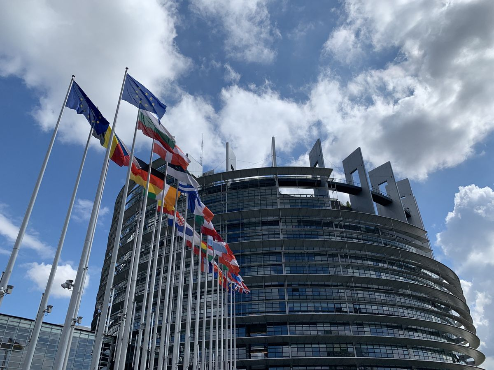

INFO FRANCEINFO. Européennes : les Républicains et le RN n'ont pas signé le plaidoyer de Transparency International pour la lutte contre la corruption
149 candidats français d'autres partis ont signé le document proposé par l'organisation.

Dans le cadre des élections européennes, Transparency International a invité les candidats à signer un engagement visant à renforcer la transparence des institutions européennes et à lutter contre la corruption.
Selon les premières informations publiées par l'organisation, plusieurs listes ont répondu favorablement à cette initiative afin de démontrer leur volonté d'améliorer les pratiques de gouvernance publique.
Toutefois, certains partis politiques ont choisi de ne pas signer le document présenté avant les élections européennes.
Une initiative pour renforcer la confiance
Transparency International estime que ce type d'engagement contribue à renforcer la confiance des citoyens envers les institutions et les représentants politiques.
L'organisation rappelle également l'importance de la transparence dans le fonctionnement des administrations publiques européennes.
Une nouvelle évaluation sera réalisée après le scrutin afin d'analyser l'impact de cette campagne de sensibilisation.